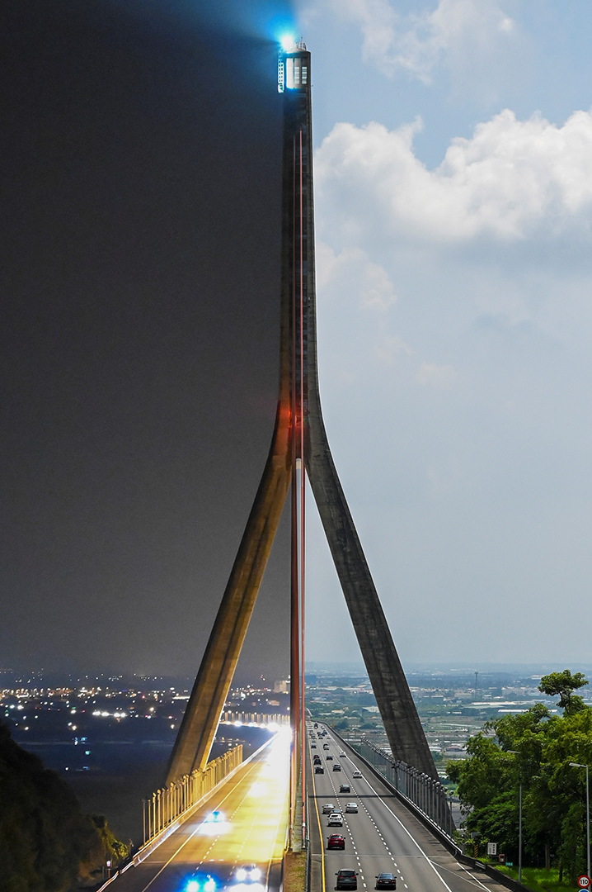

<!DOCTYPE html>
<html lang="en">

<head>
  <meta name="viewport" content="width=device-width, initial-scale=1.0">
  <title>Auto-slideshow</title>
  <!--Stylesheet-->
  <link rel="stylesheet" href="style.css">
</head>

<body>
  <div class="container">
    <div class="wrapper">
      <!--
      
      
      
      
      
      -->
    </div>
  </div>

  <script>
    const container = document.querySelector('.wrapper');
    let numberOfImages = 0;

    // Function to get number of images dynamically
    function getImageCount() {
      let i = 1;

      // Check for existence of images until one is not found
      function checkImageExists() {
        const img = new Image();
        img.onload = function () {
          numberOfImages++;
          checkImageExists();
        };
        img.onerror = function () {
          generateImages();
        };
        img.src = `Pic/image_${i}.jpg`;
        i++;
      }

      // Start checking for image existence
      checkImageExists();
    }

    // Function to generate img elements dynamically
    function generateImages() {
      for (let i = 1; i <= numberOfImages; i++) {
        const img = document.createElement('img');
        img.src = `Pic/image_${i}.jpg`;
        container.appendChild(img);
      }
      const img = document.createElement('img');
      img.src = `Pic/image_1.jpg`;
      container.appendChild(img);

      // Update animation styles
      updateAnimationStyles();
    }

    // Function to update animation styles
    function updateAnimationStyles() {
      let animationDuration = `${numberOfImages * 5}s`; // Calculate animation duration.
      let animationPercent = 100 / numberOfImages; // Calculate percentage of a second.

      let styles = '@keyframes slide {';
      styles += `
                ${0}% {
                    transform: translateX(0);
                }`;
      for (let i = 0; i < numberOfImages; i++) {
        styles += `
                ${(animationPercent * i + animationPercent * (4 / 5)).toFixed(2)}% {
                    transform: translateX(-${i * 100}%);
                }`;
        styles += `
                ${(animationPercent * i + animationPercent).toFixed(2)}% {
                    transform: translateX(-${(i + 1) * 100}%);
                }`;
      }
      styles += `
                ${100}% {
                    transform: translateX(-${numberOfImages * 100}%);
                }`;
      styles += '}';

      styles += `
        .wrapper {
            width: 100%;
            display: flex;
            animation: slide ${animationDuration} linear infinite; /* Modify animation duration */
        }`;

      const styleSheet = document.createElement('style');
      styleSheet.type = 'text/css';
      styleSheet.innerText = styles;
      document.head.appendChild(styleSheet);
    }

    // Call the function to get the image count and start generating images
    getImageCount();
  </script>
</body>

</html>
